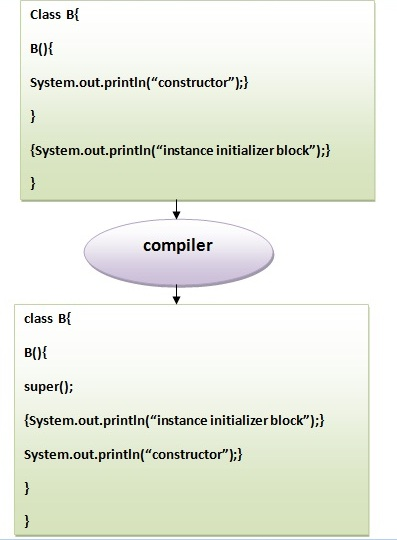

☰ 目录
31 java 实例初始化程序块
实例初始化块的规则：
实例初始化块主要有三个规则。 它们如下：
- 在创建类的实例时创建实例初始化程序块。
- 在父类构造函数被调用之后(即在
super()构造函数调用之后)调用实例初始化块。
- 实例初始化程序块按它们显示的顺序排列。
实例初始化程序块用于初始化实例数据成员。 它在每次创建类的对象时运行。实例变量的初始化可以是直接的，但是可以在初始化实例初始化块中的实例变量时执行额外的操作。
什么是实例初始化块的使用，我们可以直接分配一个值在实例数据成员？ 例如：
class Bike{
int speed=100;
}
为什么要使用实例初始化块？
假设在赋值给实例数据成员时必须要执行一些操作。 如：使用for循环来填充复杂数组或错误处理等。
实例初始化程序块的示例
下面来看看实例初始化块执行初始化的简单例子。
class Bike7 {
int speed;
Bike7() {
System.out.println("speed is " + speed);
}
/// 还能这样用？
{
speed = 100;
}
public static void main(String args[]) {
Bike7 b1 = new Bike7();
Bike7 b2 = new Bike7();
}
}
执行上面代码得到以下结果 -
speed is 100
speed is 100
在Java中有三个地方可以执行实例初始化块操作：
- 方法
- 构造函数
- 代码块
实例初始化块或构造函数哪个先调用？
看看下面代码就知道了。
class Bike8 {
int speed;
Bike8() {
System.out.println("constructor is invoked");
}
{
System.out.println("instance initializer block invoked");
}
public static void main(String args[]) {
Bike8 b1 = new Bike8();
Bike8 b2 = new Bike8();
}
}
执行上面代码得到以下结果 -
instance initializer block invoked
constructor is invoked
instance initializer block invoked
constructor is invoked
在上面的例子中，似乎首先调用实例初始化块，但是可惜不是。 实例初始化块在对象创建时被调用。 java编译器在第一个语句super()之后的构造函数中复制实例初始化块。 首先，调用构造函数。 让我们通过下面的图来理解它：
注意：java编译器在每个构造函数中会自动复制实例初始化块的代码。

实例初始化块的规则：
实例初始化块主要有三个规则。 它们如下：
- 在创建类的实例时创建实例初始化程序块。
- 在父类构造函数被调用之后(即在
super()构造函数调用之后)调用实例初始化块。
- 实例初始化程序块按它们显示的顺序排列。
在super()之后调用的实例初始化块的程序示例：
class A {
A() {
System.out.println("parent class constructor invoked");
}
}
class B2 extends A {
B2() {
super();
System.out.println("child class constructor invoked");
}
{
System.out.println("instance initializer block is invoked");
}
public static void main(String args[]) {
B2 b = new B2();
}
}
上面代码执行结果如下 -
parent class constructor invoked
instance initializer block is invoked
child class constructor invoked
实例块的另一个示例
class A {
A() {
System.out.println("parent class constructor invoked");
}
}
class B3 extends A {
B3() {
super();
System.out.println("child class constructor invoked");
}
B3(int a) {
super();
System.out.println("child class constructor invoked " + a);
}
{
System.out.println("instance initializer block is invoked");
}
public static void main(String args[]) {
B3 b1 = new B3();
B3 b2 = new B3(10);
}
}
上面代码执行结果如下 -
parent class constructor invoked
instance initializer block is invoked
child class constructor invoked
parent class constructor invoked
instance initializer block is invoked
child class constructor invoked 10